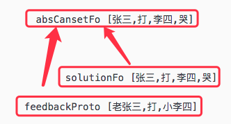
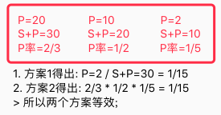

AI系列之《2022.09-11：任务失效、多层多样性与 Canset 再类比》
来源：HELIX_THEORY/手稿/assets/655_R帧到构建canset关联示图.png

来源：HELIX_THEORY/手稿/assets/656_Canset再抽象网络示图.png

来源：HELIX_THEORY/手稿/assets/657_抽象canset的SP计算方式示图.png
来源：Note27.md
9 到 11 月，系统处理了父任务失效机制、时序时间跨度、近期激活节点增益、多层多样性、不完全时序、三段抽具象，以及 Canset 再类比。
父任务失效机制解决的是“什么时候该放弃原任务”的问题。如果任务一直不失效，系统会陷入无效坚持；如果太容易失效，又无法形成长期目标。时序跨度和近期激活增益则处理时间维度上的注意力：哪些过去仍然相关，哪些刚发生的经验应被提升权重。
多层多样性和不完全时序，让系统开始面对真实世界的缺失、局部、相似与层级复用。Canset 再类比把可执行方案也纳入类比体系，意味着“行为方案”本身可以像概念一样迁移、复用和重组。